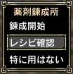
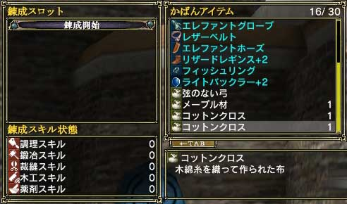

まず自分が錬成したい分野のマスターに話しかけてください。「薬剤」ならば「薬剤錬成師範」です。
話しかけるとメニューが出ますので「錬成開始」を選んでください。
 
(左：メニュー 右：錬成画面)
すると錬成画面が出てくるので、「かばんアイテム」から錬成に必要なアイテムを選びます。全て選んだら、Tabキーで「錬成スロット」の方にカーソルを移し「錬成開始」を選ぶと錬成をします。
間違えて「錬成スロット」に登録したアイテムは、エンターキーを押すことで登録解除できます。
錬成画面ではレシピを見ることができないので、あらかじめ紙にレシピをメモしておくことをおすすめします。 |
|